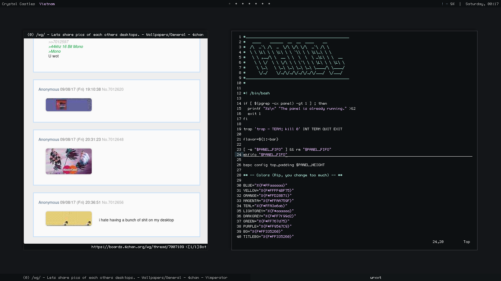
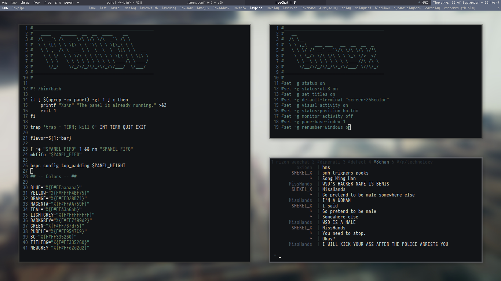

/beiims.world/ home · twitter · dev · dsktps Here lies old ricerip vimperator · Window Manager: bspwm · Term: urxvt · Panel: bar · Dotfiles: rip  · Window Manager: bspwm · Term: urxvt · Panel: lemonbar + tint2 · Dotfiles: rip 